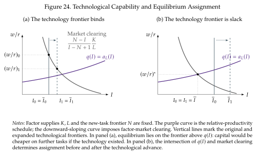

The race between man and machine¶
We now turn to a central topic at the center of how technological progress and automation affect workers:
Automation removes tasks from labor, but technology can also create new activities in which workers have a comparative advantage.
For example, a new production process might automate record processing while creating work in equipment diagnosis, design, or coordinating the new process. The issue is whether the creation of productive opportunities for workers keeps pace with automation. This section looks into this topic following the work of Acemoglu and Restrepo (2018).
Tasks and the two technology frontiers¶
Active tasks lie on an interval of length one and production is Cobb-Douglas across tasks:
When \(N=1\), this is the \([0,1]\) interval from Section 5.
An increase in \(N\) introduces new tasks at the top and replaces an equal measure of old tasks at the bottom. We can think of the new tasks as improved versions of old activities. In this way, as new tasks emerge the measure of active tasks stays equal to one.
Technology also makes it possible for some tasks to be performed by capital. We call \(\overline I\in(N-1,N)\) the technological automation frontier. Capital can perform tasks up to \(\overline I\); tasks above it require labor. This variable \(\overline I\) tells us what machines able to do and is different from \(I\) which refers to the actual assignment cutoff, what machines actually do.
To simplify the algebra, set \(a_K(i)=1\) and assume \(a_L(i)>0\) is increasing. So, relative productivity \(q(i)=a_L(i)/a_K(i)=a_L(i)\) is increasing and capital has a comparative advantage at low-indexed tasks and labor has a comparative advantage at high-indexed tasks (that goes to infinity above \(\overline I\)).
At any given \(w/r\), define the unconstrained cost cutoff \(\widetilde I\) by
There are two cases.
- If \(\overline I<\widetilde I\), machines would be cheaper on additional tasks but the technology is not yet available. The frontier binds, \(I=\overline I\), and advancing it can displace labor.
- If \(\widetilde I<\overline I\), machines are technologically capable of more tasks than firms choose to automate. Advancing \(\overline I\) alone does nothing locally: assignment remains at \(I=\widetilde I\).
It is therefore essential to distinguish capability from actual adoption. The optimal assignment satisfies
Recovering aggregate production¶
Define the share of capital tasks as
With Cobb--Douglas task aggregation, every equal-length task interval receives the same expenditure. For fixed supplies \(K\) and \(L\), the cost-minimizing allocation consequently has
Substitute these allocations into (7.19):
The function \(\mathcal A(I,N)\) collects productivity on labor's assigned tasks.
Production looks like the Cobb--Douglas function in Section 2, but now technology can change its exponents by changing \(m\) and productivity reflects how good workers are at their tasks and how many tasks they perform. The factors \(m^{-m}(1-m)^{-(1-m)}\) allow us to compare different assignments. They capture the changing quantities of each input per assigned task.
In any case, as in the Cobb--Douglas, the shares \(m\) and \(1-m\) also link inputs to prices and determine the input shares. Normalize the final-good price to one from this point onward, so \(w\) and \(r\) are real factor prices. Competitive payments satisfy
Dividing the factor payments gives the market-clearing relationship
This is the relative wage that clear the market at fixed \(K/L\) and \(N\). Its right-hand side decreases with \(I\) because assigning more tasks to capital increases demand for its fixed supply, raising its rental rate relative to the wage. This curve and the constrained assignment condition (7.22) jointly determine \(w/r\) and \(I\).

Figure 24 illustrates both cases. In panel (a), the technology frontier advances and the actual machine bundle expands, while \(w/r\) falls along the market-clearing curve. The fall in \(w/r\) limits the range of tasks that would be profitable to automate. In panel (b), the cost cutoff is already below the technology frontier, so extra technological capability does not change assignment or relative factor prices. This also connects to Section 5's elasticity decomposition: when the frontier binds, local price changes leave assignment fixed and \(\sigma=\eta=1\); when the frontier is slack, reassignment raises \(\sigma\) above one.